Flor
Biología de las Plantas: laboratorio
Grupo de Estudios Botánicos GEOBOTA, Universidad de Antioquia
2023-05-18
Introducción
Flores
{kind=link}
{kind=link}
{kind=link}
Las inflorescencias más grandes
{kind=link}
{kind=link}
{kind=link}
Definición
Estructura reproductiva de las Angiospermae. Vastago modificado y determinado que porta esporofilas (estambres o carpelos), con o sin hojas exteriores modificadas, el perianto (sépalos y pétalos). Parte de la planta o de la inflorescencia. Simpson (2019).
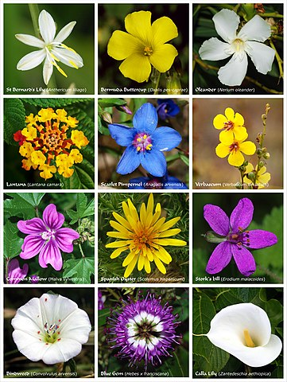
{kind=link}
Partes
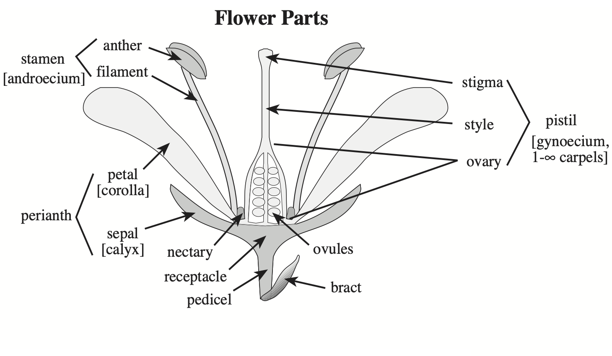
Fig 8: Partes de la flor. Tomado de Simpson (2019).
Verticilos y componentes
| Verticilos | Componentes |
|---|---|
| Cáliz | Sépalos |
| Corola | Pétalos |
| Androceo | Estambres |
| Gineceo | Carpelos |
- Perianto: conjunto de cáliz y corola.
- Perigonio: cáliz y corola indistinguibles.
- Completa: presenta todos los verticilos
- Incompleta: carece de algún verticilo
Perianto: ciclos y merosidad
- Ciclos: número de verticilos. Uni, bi o tri, tetra o multiseriado.
- Merosidad: número de partes por verticilos. Bi, tri, tetra, pentamero, etc.
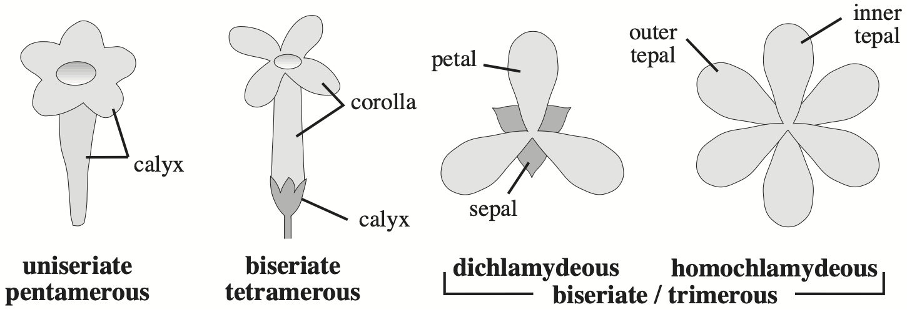
Fig 9: Ciclos y merosidad del perianto. Tomado de Simpson (2019).
Perianto: fusión
Cuando las partes florales de un mismo verticilo no están unidas se usa el prefijo apo o poli, cuando están unidas se usa sin o sim.

Fig 10: Tipos de fusión de sépalos y pétalos. Tomado de Simpson (2019).
Perianto: tipos
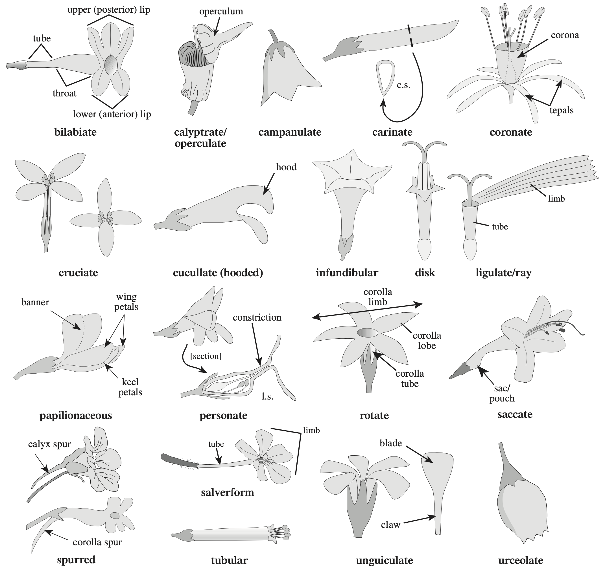
Fig 11: Tipos de perianto. Tomado de Simpson (2019).
Androceo
Verticilo floral que comprende todos los estambres. Evert & Eichhorn (2013).

Fig 12: Partes de un estambre filamentoso y estructura de una antera. Tomado de Bonifacino et al. (2021).
Polen
Gametofito másculino de las plantas con semilla. Fuente y portador de los gametos masculinos. Halbritter et al. (2018).
Gineceo: de carpelos y pistilos
Gineceo: El conjunto de todos los carpelos. Evert & Eichhorn (2013). Verticilo femenino de una flor. El(los) pistilo(s). Beentje (2016).
Carpelo: unidad del gineceo. Megasporofila modificada, típicamente conduplicada (doblada longitudinalmente a lo largo de la vena media), que encierra uno o más óvulos. Simpson (2019).
Pistilo: en flores apocárpicas, unidad del carpelo, estilo y estigma separados. En flores sincárpicas, todo el gineceo. Órgano femenino de la flor, cuando está completo consiste de ovario, estilo y estigma. Beentje (2016)
Gineceo: carpelos, fusión y lóculos
Si el gineceo es apocárpico o unicarpelar, el número de carpelos y de lóculos es equivalente al número de pistilos.
Si el gineceo es sincárpico, el número de carpelos es igual al número de estilos o estigmas si presenta más de uno, el número de loculos es variable. Si sólo tiene un estilo o estigma, generalmente el número de carpelos suele ser el número de lóculos.
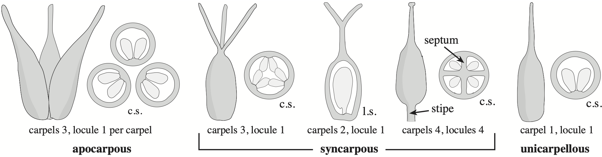
Fig 15: Fusión del gineceo, número de carpelos y lóculos. Tomado de Simpson (2019).
Gineceo: posición
Ubicación o posición del gineceo respecto a las otras partes de la flor: androceo, cáliz, corola o hipanto1.
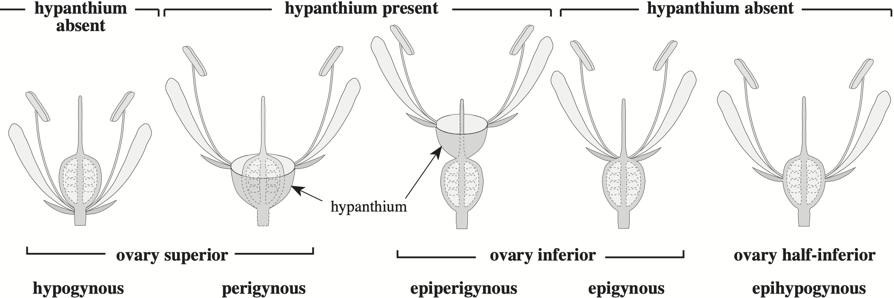
Sexo
de la flor
- perfecta o bisexual (4)
- carpelos y estambres
- imperfecta o unisexual
- carpelos: pistilada (6)
- estambres: estaminada (5)
de la planta
- hermafrodita (1)
- dioica (3 y 8)
- monoica (2 y 7)

Simetría
Evaluación de la presencia y número de planos de simetría o imágenes especualres en una flor en vista distal.
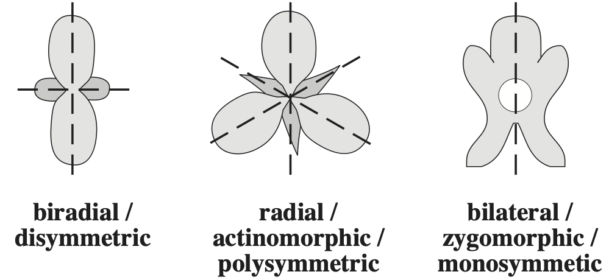
Fig 18: Tipos de simetría de la flor. Tomado de Simpson (2019).
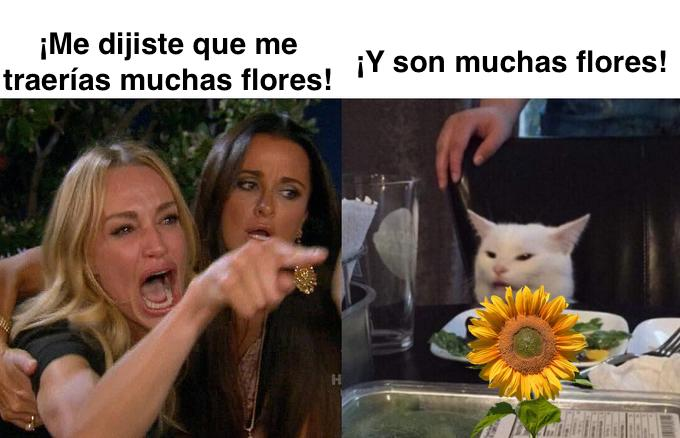
Inflorescencia
Parte de la planta que lleva las flores, incluyendo todas sus brácteas, ramas y flores, pero excluyendo las hojas no modificadas. Beentje (2016).

Fig 19: Tipos de inflorescencia. Tomado de Bonifacino et al. (2021).
Inflorescencia: tipos
- Simples: sólo presentan ramificaciones de primer orden.
- Definidas, cerradas, centrífugas o cimosas: el eje presenta una flor terminal.
- Indefinidas, abiertas, centrípetas o racemosas: el eje no presenta una flor terminal.
- Compuestas: tienen más de un orden de ramificación.
Inflorescencia: cimosas
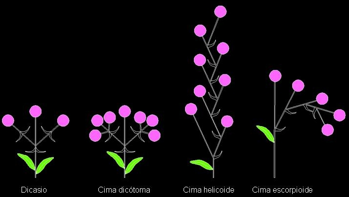
Fig 20: Algunos tipos de inflorescencias cimosas o definidas. Tomado de Casares Porcel et al. (2014).
Inflorescencia: racemosas
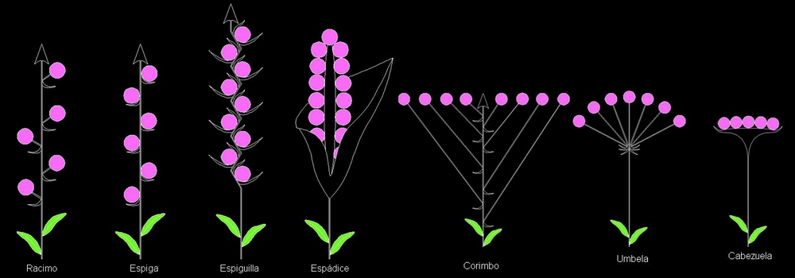
Fig 21: Algunos tipos de inflorescencias racemosas o indefinidas. Tomado de Casares Porcel et al. (2014).
Inflorescencia: compuestas
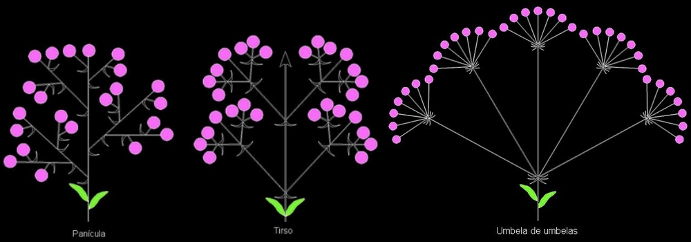
Fig 22: Algunos tipos de inflorescencias compuestas. Tomado de Casares Porcel et al. (2014).
Procedimiento
Morfología de la flor
- Realice observaciones comparativas entre una flor de Eudicotyledoneae y Monocotyledoneae. Identifique cada uno de los verticilos y componentes de estos.
Polen
- Realice montaje húmedo de diferentes anteras. Observe e identifique la unidad polínica, aberturas, estructura, polaridad, simetría, forma y tamaño
Diversidad de la flor
Observe la mayor cantidad de flores de plantas de diferente especie. Tenga en cuenta:
- Verticilos presentes: perianto (cáliz, corola), androceo, gineceo.
- Número de componentes de cada verticilo: sépalos, pétalos, estambres, carpelos.
- Flor completa o incompleta
- Flor perfecta o imperfecta
- Simetría: actinomorfa, irregular, zigomorfa.
- Número de carpelos
- Posición del ovario: ínfero, semi-ínfero, súpero,
- Sexo de la flor: unisexual, bisexual.
- Sexo de la especie: dioica, monoica.
- Flores solitarias o en inflorescencia
- Tipo de inflorescencia: espiga, capítulo, umbela, etc.